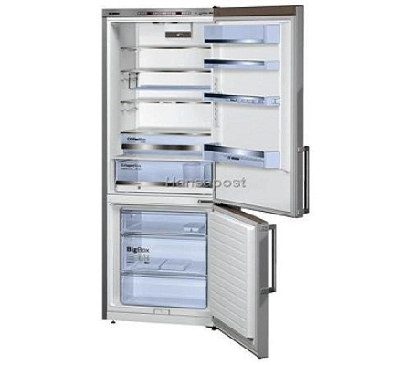

VitaLina+


Холодильник, Bosch / высота: 201 см, KGE49BI40
Цена 849,00
Товар на складе (доставка 1 – 3 дня)
• Описание товара
• Технические характеристики
Производительность и вместительность • Класс энергопотребления: A+++ • Годовое энергопотребление: 175 кВт/ч в год • Общий объём: 413 л Дизайн и удобство • Дверь - Inox EasyClean, боковые панели - хромированный металлик • 7-местный электронный контроль • 2 системы охлаждения Холодильная камера • Объём холодильной камеры: 301 л • Динамическое охлаждение при помощи встроенного вентилятора • Автоматическая функция быстрого охлаждения • Фильтр AirFresh • 5 полок из небьющегося стекла, из них 2 регулирующихся по высоте • 4 дверных полки, из которых одна EasyLift • Гибкая полка, которую можно использовать в качестве полки для бутылок • 1 ChillerBox для хранения мяса и рыбы. В ящике самая низкая температура в холодильнике • Внутреннее LED-освещение Морозильная камера • Объём морозильной камеры: 112 л • Low Frost • Автоматическое охлаждение свежих продуктов • Мощность замораживания: 15 кг / 24 ч • Автономное сохранение холода: 44 ч • 3 прозрачных полки морозильной камеры, в том числе 1 BigBox • Визуальная и звуковая система предупреждения Технические данные • Регулируемые передние аутригеры, задние колёсики • Дверные петли справа, возможность перевешивания двери